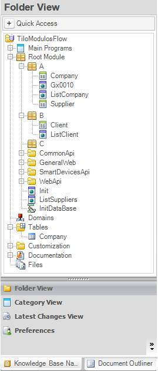

As of GeneXus X Evolution 3 it is possible to work with Module objects. This opens the possibility of defining Parallel Transactions in different Modules. This document explains the expected behavior when working with Parallel Transactions, and the effect of the Object Visibility property on accessing Attributes — this is also valid when working with one Transaction only. The first thing to make clear is that the Module objects feature supports the definition of Parallel Transactions. Note: if different transactions with the same name but different primary key are defined, different tables will be created for each—the name of the tables created will add a number at the end to distinguish. For instance tables if we create two transactions called "Customer" with different primary key then tables: Customer and Customer1 will be created. Object visibility of Attributes, Tables and TransactionsThe granularity to which access to Data may be denied is a Table. This means it is not possible to have different Attributes of the same Table as Public and Private, since all attributes are either Public or Private. Access to all Table Attributes will be denied if:
In other words, having just one Parallel Transaction defined with Object Visibility = Public will enable access to any of the attributes of the table for all objects in the Knowledge Base. When access is denied, the specification will fail with the following error: error: spc0209: Table '%1' cannot be accessed. ExampleWe will use the transactions' structure as defined in the following wiki document: Parallel Transactions. Example 1If all transactions — Company, Supplier and Client, have the Object Visibility property set to "Public", then all the attributes contained in the Company Table will be accessible from any object in the Knowledge Base. Example 2If all transactions — Company, Supplier and Client, have the Object Visibility property set to "Private", then all the attributes contained in the Company Table will be accessible only from objects in Modules "A" or "B" — and their child modules, if any. Access from the "C" or Root module will be denied. Example 3If any of the transactions — Company, Supplier or Client, has the Object Visibility property set to "Public", then all attributes contained in the Company Table will be accessible from any object in the Knowledge Base. See Also |
| Backlinks | |
| HowTo: Merging two or more Knowledge Bases into one using Modules | Toc:Modules |